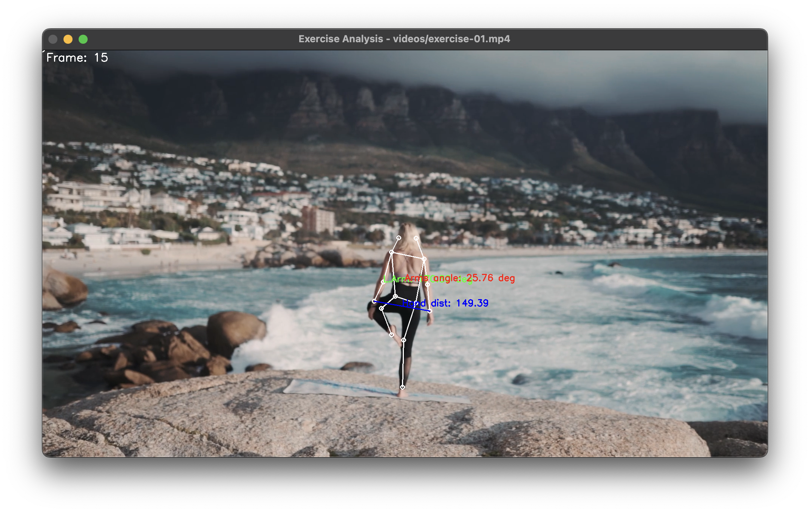

Example Outputs

Basic Pose Detection
Detection results showing 17 keypoints and skeleton connections for human pose analysis.
Exercise Analysis
Advanced pose analysis with angle measurements, distance tracking, and form analysis for exercise monitoring.
Basic Pose Detection
from yolozone import PoseDetector
import cv2
# Initialize detector with a specific model
detector = PoseDetector(model="yolov8l-pose.pt")
# Read image
img = cv2.imread("exercise.jpg")
# Find keypoints
keypoints = detector.find_keypoints(img)
# Get points and lines for visualization
points, lines = detector.draw_pose(keypoints)
# Draw basic pose skeleton
for point in points:
cv2.circle(img, point, 5, (255, 255, 255), 2)
for line in lines:
cv2.line(img, line[0], line[1], (255, 255, 255), 2)
# Display or save result
cv2.imshow("Pose Detection", img)
cv2.waitKey(0)
cv2.destroyAllWindows()Key Features
- 17-point keypoint detection
- Automatic skeleton visualization
- Support for multiple model sizes
- Easy-to-use visualization functions
Exercise Analysis
def process_exercise_video(video_path, detector):
"""Analyze exercise form in a video"""
cap = cv2.VideoCapture(video_path)
# Get video properties
frame_width = int(cap.get(cv2.CAP_PROP_FRAME_WIDTH))
frame_height = int(cap.get(cv2.CAP_PROP_FRAME_HEIGHT))
fps = int(cap.get(cv2.CAP_PROP_FPS))
while True:
ret, frame = cap.read()
if not ret:
break
# Detect pose keypoints
keypoints = detector.find_keypoints(frame)
# Draw basic skeleton
points, lines = detector.draw_pose(keypoints)
for point in points:
cv2.circle(frame, point, 5, (255, 255, 255), 2)
for line in lines:
cv2.line(frame, line[0], line[1], (255, 255, 255), 2)
# Analyze left arm angle (shoulder-elbow-wrist)
angle, text, pos = detector.angle_between_3_points(
keypoints, 5, 7, 9 # Left shoulder, elbow, wrist
)
cv2.putText(frame, f"L.Arm: {text}", pos,
cv2.FONT_HERSHEY_SIMPLEX, 0.8, (0, 255, 0), 2)
# Measure hand distance (wrist to wrist)
dist, text, pos, p1, p2 = detector.distance_between_2_points(
keypoints, 9, 10 # Left to Right wrist
)
cv2.putText(frame, f"Hand dist: {text}", pos,
cv2.FONT_HERSHEY_SIMPLEX, 0.8, (255, 0, 0), 2)
cv2.line(frame, p1, p2, (255, 0, 0), 2)
# Calculate arm symmetry (angle between arms)
angle, text, pos = detector.angle_between_2_lines(
keypoints, 5, 9, 6, 10 # Left arm vs Right arm
)
cv2.putText(frame, f"Arms angle: {text}", pos,
cv2.FONT_HERSHEY_SIMPLEX, 0.8, (0, 0, 255), 2)
cv2.imshow("Exercise Analysis", frame)
if cv2.waitKey(1) & 0xFF == ord('q'):
break
cap.release()
cv2.destroyAllWindows()
# Initialize detector and process video
detector = PoseDetector(model="yolov8l-pose.pt")
process_exercise_video("exercise.mp4", detector)Analysis Features
- Real-time angle measurements
- Distance tracking between keypoints
- Symmetry analysis
- Form monitoring and visualization
Exercise Metrics
- Joint angles for form analysis
- Limb distances for range of motion
- Symmetry checking for balanced movement
- Real-time feedback visualization
Advanced Pose Analysis
# Initialize with larger model for better accuracy
detector = PoseDetector(model="yolov8x-pose.pt")
# Process video with detailed analysis
def analyze_exercise_form(video_path):
cap = cv2.VideoCapture(video_path)
frame_count = 0
while True:
ret, frame = cap.read()
if not ret:
break
frame_count += 1
try:
# Detect pose
keypoints = detector.find_keypoints(frame)
# Draw skeleton
points, lines = detector.draw_pose(keypoints)
for point in points:
cv2.circle(frame, point, 5, (255, 255, 255), 2)
for line in lines:
cv2.line(frame, line[0], line[1], (255, 255, 255), 2)
# Analyze multiple angles
angles = {
'left_arm': detector.angle_between_3_points(
keypoints, 5, 7, 9)[0], # Shoulder-elbow-wrist
'right_arm': detector.angle_between_3_points(
keypoints, 6, 8, 10)[0], # Shoulder-elbow-wrist
'left_leg': detector.angle_between_3_points(
keypoints, 11, 13, 15)[0], # Hip-knee-ankle
'right_leg': detector.angle_between_3_points(
keypoints, 12, 14, 16)[0] # Hip-knee-ankle
}
# Check form symmetry
arm_diff = abs(angles['left_arm'] - angles['right_arm'])
leg_diff = abs(angles['left_leg'] - angles['right_leg'])
# Display analysis
y_pos = 30
for name, angle in angles.items():
cv2.putText(frame, f"{name}: {angle:.1f}°",
(10, y_pos), cv2.FONT_HERSHEY_SIMPLEX,
0.6, (0, 255, 0), 2)
y_pos += 25
# Show symmetry analysis
cv2.putText(frame, f"Arm symmetry diff: {arm_diff:.1f}°",
(10, y_pos), cv2.FONT_HERSHEY_SIMPLEX,
0.6, (0, 255, 255), 2)
y_pos += 25
cv2.putText(frame, f"Leg symmetry diff: {leg_diff:.1f}°",
(10, y_pos), cv2.FONT_HERSHEY_SIMPLEX,
0.6, (0, 255, 255), 2)
cv2.imshow("Advanced Form Analysis", frame)
if cv2.waitKey(1) & 0xFF == ord('q'):
break
except Exception as e:
print(f"Error on frame {frame_count}: {str(e)}")
continue
cap.release()
cv2.destroyAllWindows()
# Process video with advanced analysis
analyze_exercise_form("workout.mp4")Advanced Features
- Multi-joint angle tracking
- Symmetry analysis for both arms and legs
- Comprehensive form monitoring
- Error handling for robust processing
Performance Tips
- Use appropriate model size based on accuracy needs
- Enable GPU acceleration for faster processing
- Implement error handling for robust analysis
- Adjust visualization based on monitoring needs